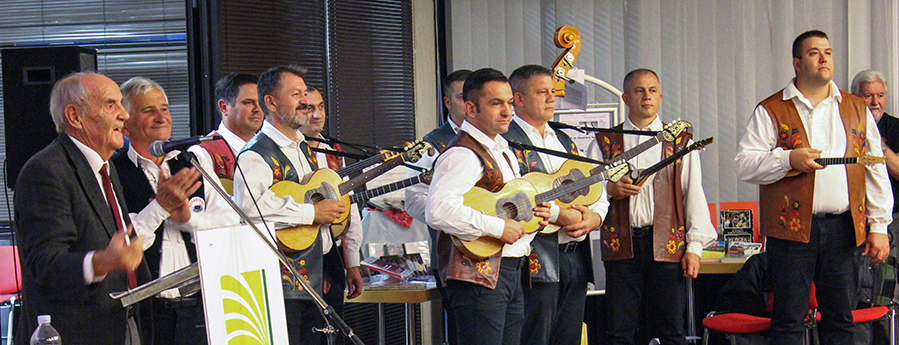
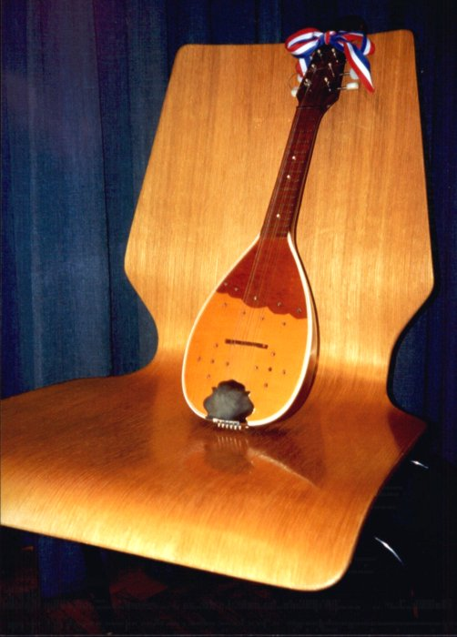
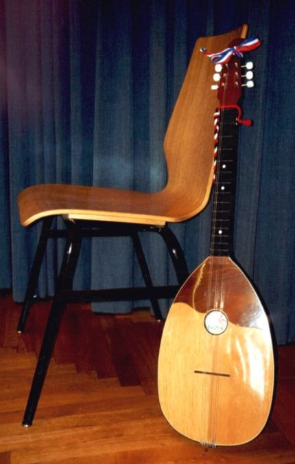
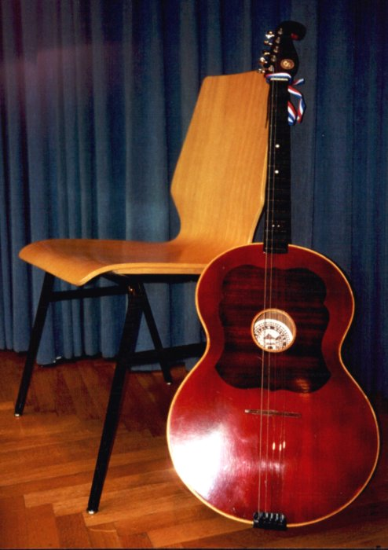

Slavonija je poznata po bogatoj glazbenoj tradiciji i tamburaškoj glazbi koja je dio svakodnevnog života.
Slavonske pjesme govore o ljubavi, radu, veselju i druženju, a izvode se uz tradicionalne instrumente poput tambure.
Ova glazba predstavlja važan dio identiteta Slavonije i nezaobilazan je dio kulturne baštine.
Kolo je tradicionalni slavonski ples u kojem ljudi plešu u krugu, držeći se za ruke. Ovdje je prikazan stilizirani prikaz sudionika koji kruže oko središta.


